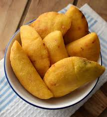

Recipe to make empanadas
Venezuelan empanadas are crescent-shaped pastries, they are
made from corn flour - which makes them distinctive from other
types of empanadas - and any type of filling that can
withstand frying. Not to mention that they are gluten-free
empanadas, so they are appropriate for this type of
intolerance.
Ingredients
salt
cheese
water
precooked corn flour
oil
Steps
Put water, flour and salt in a bowl and mix until you obtain a homogeneous dough.
Create balls of dough and then flatten them until they are as thin as possible.
Place the cheese in the middle of the dough and close it. The dough should be in the shape of a half moon.
Fry the empanadas one or two at a time until golden brown.